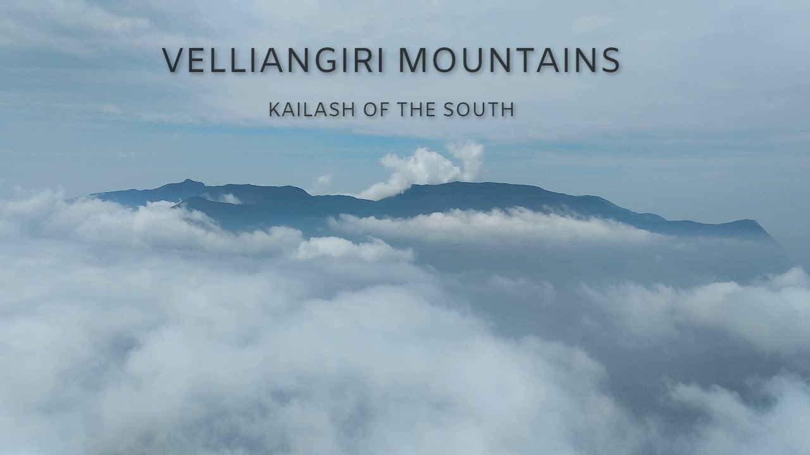

Coimbatore, often called the "Manchester of South India," is a major city in the state of Tamil Nadu. Situated on the banks of the Noyyal River, Coimbatore is known for its thriving textile and manufacturing industries, as well as its pleasant climate.
The city serves as a gateway to the Nilgiri Mountains and is surrounded by picturesque landscapes. Coimbatore is also known for its numerous educational institutions and has gained recognition as a center for healthcare and research.

Coimbatore is home to several temples and religious landmarks. One of the most prominent temples is the Marudamalai Temple, dedicated to Lord Murugan. Nestled on a hill, it offers breathtaking views of the surrounding lush greenery and is a popular pilgrimage site.
Another notable temple is the Velliangiri Aandavar Temple, dedicated to Lord Shiva. It is known as "Kailash of South", this temple is nestled amidst the scenic beauty of nature, surrounded by lush greenery and picturesque landscapes.The temple is located atop Velliangiri Hill, which is part of the Western Ghats range.

For entertainment and recreation, Coimbatore offers attractions such as Black Thunder Theme Park, a popular destination for thrill-seekers with its water slides and amusement rides. The VOC Park and Zoo, located in the heart of the city, is a family-friendly spot featuring a zoo, toy train, and beautiful gardens.

Coimbatore is renowned for its delectable cuisine, with a variety of traditional dishes to savor. The city is known for its mouthwatering South Indian breakfast items like idli, dosa, and vada. Don't miss trying the famous Coimbatore-style biryani and the delectable street food found in popular food hubs like Gandhipuram and RS Puram.
In addition to its cultural and culinary offerings, Coimbatore offers a range of accommodation options to suit every traveler's needs. From luxury hotels to budget-friendly guesthouses, you'll find comfortable and convenient places to stay during your visit.
Accommodation Facilities
Hotel Tamilnadu
Located at the heart of the business hub, the luxury of Hotel Tamilnadu Coimbatore cultivates the perfect aura for your rewarding business engagements while its comfort mesmerizes your inner soul with eternal tranquility.
Coimbatore, with its blend of natural beauty, cultural heritage, and industrial prowess, offers a unique experience to visitors. Whether you're exploring ancient temples, enjoying the scenic beauty of the Western Ghats, or indulging in local delicacies, Coimbatore promises a memorable and enriching journey.